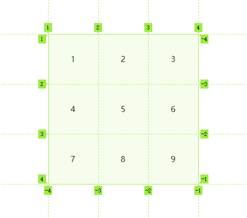
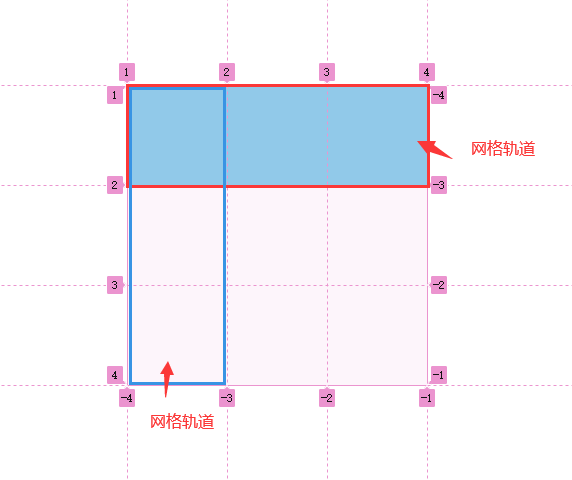
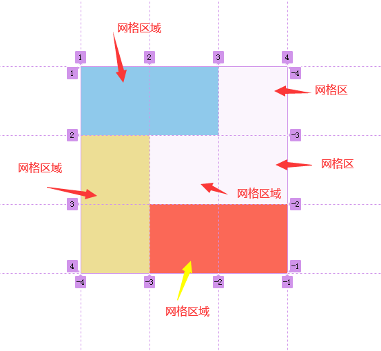
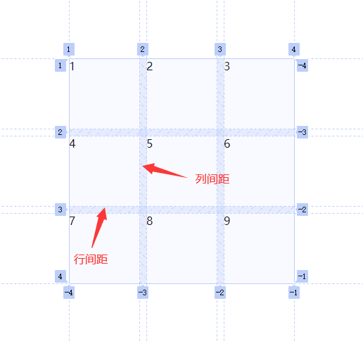
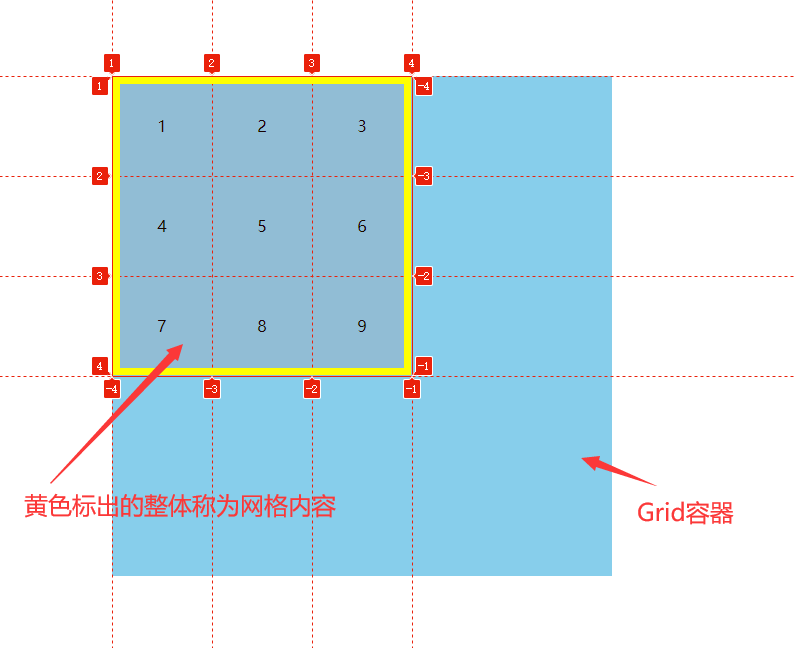

Flex布局
一、基本概念
简介
- 布局的传统解决方案，基于盒子模型，依赖display属性+position属性。它对于那些特殊布局非常不方便，比如垂直居中就不容易实现
- 2009年，W3C提出了一种新的方案：Flex布局，可以简便、完整、响应式地实现各种布局页面。目前，他已经得到了所有浏览器的支持，这意味着，现在就能很安全地使用这项功能，Flex布局将成为未来布局的首选方案
什么是flex布局？
- flex(flexible box)，意为“弹性的盒子”，flex布局也称为flex弹性布局
- 任何一个HTML元素都可以指定为flex布局
- flex布局是一种==一维的==布局模型，它给flexbox的子元素之间提供了强大的空间分布和对齐能力
- 之所以说flexbox是一种一维布局，是因为一个flexbox一次只能处理一个维度上的元素布局，一行或一列
- 在flex布局中，项目的float、clear和verticla-align属性将失效
什么是flex容器(flex container)？
- 凡是采用flex布局的元素，就称为flex容器
- 也就是设置了
display:flex;或display:inline-flex;的元素称之为flex容器 - 布局有两种
display:flex;弹性布局，元素自身以块级元素显示display:inline-flex弹性布局，元素自身以行内块元素显示
什么是flex项目(flex item)？
- flex容器的所有子元素(仅指直接子元素，不包括孙元素及其后代的子元素)，自动成为容器成员，称为flex项目
什么是主轴，什么是交叉轴？
- 默认情况下，水平方向是主轴，垂直于主轴方向上的是交叉轴
- flex项目默认沿主轴方向开始排列(即从左往右沿水平方向排列)
- 主轴的开始位置(与边框的交叉点)叫做
main start，结束位置叫做main end - 交叉轴的开始位置叫做在
cross start，结束位置叫做cross end - 单个flex项目占据的主轴空间叫做
main size(主轴尺寸)，占据的交叉轴空间叫做cross size(交叉尺寸)
flex项目的默认表现形式
当flex容器和flex项目没有添加任何相关属性时，==flex项目==的默认表现形式如下：
- 子元素(项目)排列为一行(
flex-direction属性的初始值是row) - 子元素(项目)从主轴的起始线开始排列
- 子元素(项目)不会在主维度方向拉伸(放得下时不会拉伸)，但放不下时会缩小
- 子元素(项目)默认为行内块元素，不独占一行，但可以设置宽高；若没有设置宽度，则宽度由内容撑起
- 子元素(项目)没有设置高度时，被拉伸来填充交叉轴大小(单行时项目的高度等于容器高)
flex-basis属性为auto(即元素的宽为自动)flex-wrap属性为nowrap(子项默认放不下时，不会换行)
- 子元素(项目)排列为一行(
display:flex;
- flex容器为块级元素，若没有设置宽高，则宽度自动填充父元素的宽度，高度由内容撑起
display:inline-flex;
- flex容器为行内块元素，不独占一行，但可以设置宽高；若没有设置宽高，则宽高都由内容撑起
二、flex容器属性
flex-direction设置主轴方向
- 默认主轴方向就是x轴，水平向右
- 默认交叉轴就是y轴，垂直向下
flex-direction:row;属性值 说明 row (默认值)主轴为水平方向，起点在左端。(交叉轴在垂直方向，起点在元素上边框位置) row-reverse 主轴为水平方向，起点在右端。(交叉轴在垂直方向，起点在元素上边框位置) column 主轴在垂直方向，起点元素在上边框位置(交叉轴在水平方向，起点在左端) column-reverse 主轴在垂直方向，起点在下沿(交叉轴在水平方向，起点在左端)
flex-wrap项目如何换行
- 默认情况下，项目都在一条线上(轴线)上排列
flex-wrap属性用来定义：如果项目在一条轴线上排不下时，如何换行flex-wrap:nowrap;属性值 说明 nowrap 不换行(默认) wrap 换行，第一行在上方(或第一列左边) wrap-reverse 换行，第一行在下方(或第一列右边)
主轴属性 主轴方向 wrap效果 wrap-reverse效果 flex-direction:row;水平，从左至右 第二行从上到下、从左至右排列 第二行从下到上、从左至右排列 flex-direction:row-reverse;水平，从右到左 第二行从上到下、从右至左排列 第二行从下到上、从右到左排列 flex-direction:column;垂直，从上到下 第二列从左到右、从上到下排列 第二列从右到左、从上到下排列 flex-direction:column-reverse;垂直，从下到上 第二列从左到右、从下到上排列 第二列从右到左、从下到上排列 总结：
- wrap：按照交叉轴方向start–>end，主轴start–>end方向换行
- wrap-reverse：按照交叉轴方向end–>start，主轴start–>end方向换行
- 因此：wrap-reverse改变的是交叉轴的方向
flex-flow 主轴方向和项目如何换行
flex-flow属性是flex-direction和flex-wrap属性的简写形式，默认值为row nowrapflex-flow:row nowrap;第一个值规定主轴方向，第二个值规定项目如何换行justify-content 项目在主轴上对齐方式
justify-content:flex-start;属性值 说明 flex-start (默认值)，向主轴start方向对齐 flex-end 向主轴end方向对齐 center 居中 space-between 两端对齐，项目之间的间隔都相等,两端与项目之间不会有间隔 space-around 每个项目两侧的间隔相等。所以，项目之间的间隔比项目与边框的间隔大一倍(相当于加了左右外边距) space-evenly 使每个元素之间和元素距离边距的距离都相等，但iphone的SE上不支持，会失效，基本不用 align-items 项目在交叉轴上对齐方式
align-items属性定义项目在交叉轴上如何对齐，只对单行有效align-items:stretch;属性值 说明 stretch (默认值)：如果项目未设置高度或设为auto，将占满整个容器 flex-start 与交叉轴的起点对齐 flex-end 与交叉轴的终点对齐 center 与交叉轴的中点对齐 baseline 向项目的第一行文字的X的中间对齐
注意
- 默认情况下，项目如果没有设置高度或设为auto，其高度会自动拉伸到容器高度。原因是：
align-items:stretch;为默认值。- 但是在其他几种情况下(即align不为stretch时)，项目未设置高度，其高度就为内容大小，并不会拉伸。
当主轴放不下，允许换行时
- 当项目放不下，换行时，可以把每一行看做一个”新的flex容器”
align-items控制项目在”每一个容器”的交叉轴上的对齐方式- 行与行之间的间隔高度是相等的，由于每一行的最高项目高度不一样，所以每一个”新容器”所占高度也不一样
- 当前行容器占的高度=当前行最高元素的高+行与行之间的间隔=当前行最高元素的高+(容器高-每一所有行最高元素的高)/行数
- align-content 多根轴线对齐方式(多行)
该属性规定了多根轴线在交叉轴上的对齐方式
如果项目只有一根轴线，该属性不起作用(允许换行)属性值 说明 stretch (默认值)：轴线占满整个交叉轴 flex-start 与交叉轴的起点对齐 flex-end 与交叉轴的终点对齐 center 与交叉轴的中点对齐 space-between 两端对齐，与交叉轴两端对齐，轴线之间的间隔平均分布 space-around 每个轴线两侧的间隔都相等(每行加外边距)。所以，轴线之间的间隔比轴线与边框的间隔大一倍
注意！！！
可换行时，align-items与align-content的区别
align-items控制单行，因此每行都是一个”新容器”，align-items控制每个新容器内项目在交叉轴上的对齐方式，每个容器之间都有等高的间隔align-content同时控制多行
- 使用
stretch、space-between、space-around时，每行的高度等于当前行最高的项目高度+等高的行间隔,- 使用
flex-start、flex-end、center时，行与行之间没有间隔，统一成”一个容器”
三、flex项目属性
属性名 说明 order 属性定义项目的排列顺序。数值越小，排列越靠前，默认为 0 align-self 单个项目有与其他项目不一样的对齐方式，可覆盖 align-items属性,默认值为auto，表示继承父元素的align-items属性，如果没有父元素，则等同于stretch。flex-grow flex项主尺寸的flex增长系数。默认为0，即如果存在剩余空间，也不放大。 flex-shrink flex项主尺寸的缩小比例，默认为1，即如果空间不足，该项目将缩小。 flex-basis 定义了在分配多余空间之前，项目占据的主轴空间（main size） flex flex属性是flex-grow, flex-shrink和flex-basis的简写默认值为:0 1 auto。后两个属性可选
order项目的排列顺序
order属性定义项目的排列顺序order属性值>0的整数，数值越小，排列越靠前，默认为0order:1;
align-self 单个项目交叉轴对齐方式
align-self属性允许单个项目有与其他项目不一样的对齐方式，可覆盖align-items属性align-self的默认值为auto，表示继承父元素的align-items属性- 如果父元素没有设置
align-items属性，则等同于stretch(项目未设置高度时) align-self:flex-start;属性值 说明 auto 默认值，表示继承父元素的 align-items属性，如果没有父元素，则等同于stretchstretch 如果项目未设置高度或设为 auto，将占满整个容器的高度flex-start 交叉轴的起点对齐 flex-end 交叉轴的终点对齐 center 交叉轴的中点对齐 baseline 项目的第一行文字的基线对齐 - 当项目换行时，其
align-self单个项目对齐方式，是相当于其所在的哪一行的轴线而言 - 在今日头条案例中，用到
align-self:flex-start;，使行内块元素宽度不占满整行(不设宽度时)
flex-grow 项目主轴放大系数
flex-grow设置flex项目主尺寸的flex增长系数- 主尺寸是项目的宽度或高度，这取决于
flex-direction值 flex-grow属性，在flex容器有剩余空间时生效剩余空间=flex容器宽大小-所有flex项目宽加起来的大小注：剩余空间的值一定要大于0的
flex-grow默认值为0，表示即使有剩余空间，也不增长(放大)flex-grow的值>=0的数字
项目放大后尺寸计算方式
- 当所有项目的
flex-grow值的总结加<1时
- 项目放大后宽 = 项目原始宽 + 剩余空间*项目的
flex-grow值- 当所有项目的
flex-grow值的总和加起来>=1时
- 项目放大后宽=项目原始宽+剩余空间*(flex-grow值)/所有项目的flex-grow值总和
- 当flex容器的剩余空间为0时，不管flex项目的
flex-grow的值是多少，项目都不会放大(因为没有多余空间)
- flex-shrink项目主轴上缩放系数
flex-shrink属性指定了flex元素的收缩规则- 当所有项目宽度大于容器的时候才会收缩(默认主轴为水平方向)
- flex项目收缩的大小是依据所有项目的
flex-shrink值决定的 flex-shrink的默认值为1，表示容器空间不足时，所有项目等比缩小- 只有当flex容器设置了
flex-grow:nowrap;时，才能看到效果 - 当
flex-shrink:0;时，无论如何不缩放
项目收缩后尺寸大小计算方式
- 当flex-shrink总和<1时
- 计算溢出宽 =所有项目宽之和-容器宽
- 计算所有子项的总缩放宽 =溢出宽
- 当前项目缩放比例 =(当前项目原始宽
*flex-shrink值)/所有项目(宽*``flex-shrink值)之和
- 项目收缩宽=所有子项的总缩放宽
*当前项目缩放比例
- 项目收缩后宽=原始宽-收缩宽
- 当flex-shrink总和>=1时
- 计算溢出宽 =所有项目宽之和-容器宽
- 计算所有子项的总缩放宽 =溢出宽
*所有项目flex-shrink值之和
- 当前项目缩放比例 =(当前项目原始宽
*flex-shrink值)/所有项目(宽*``flex-shrink值)之和
- 项目收缩宽=所有子项的总缩放宽
*当前项目缩放比例
- 项目收缩后宽=原始宽-收缩宽
注：当项目的搜索框>项目原始宽时，此计算方式无效
flex-basis分配剩余空间前，项目占据主轴空间大小(main size)
flex-basis属性定义了在分配多余空间之前，项目占据的主轴空间- 浏览器根据这个属性聚酸主轴是否有多余空间
- 它的默认值为
auto，即项目的本来大小(如果有with，则缩放以width为参考) flex-basis的优先级要高于width- 特殊：
flex-basis:0%;元素宽为0；
flex项目放大、缩小、空间占据
flex属性是flex-grow、fleex-shrink和flex-basis的缩写- 默认值为
0 1 auto，也就是不放大，等比缩放，占主轴宽度为auto - 特殊
flex:auto;：flex:1 1 auto;flex:none;：flex:0 0 auto;flex:1：flex:1 1 0%;
四、flex实战
元素水平垂直居中
- 弹性布局:
display:flex; - 水平居中:
jusity-content:center; - 垂直居中:
align-items:center;.(不同情况下还可以使用align-content和align-self)
- 弹性布局:
画骰子
- 1~6点
双飞翼布局
- 左右固定，中间自适应，最中间的内容放在第一位，有利于SEO搜索引擎优化
- 注意点
- 容器设置
display:flex;使项目以弹性布局方式排列 - 中间的项目写在最上面，但利用
order改变排版顺序 - 中间的项目设置
flex-grow:1;：使中间项目的充分占据容器剩余空间 - 左右项目固定宽度，
flex-grow默认为0，因此不会分配容器的剩余空间
- 容器设置
flex怎么实现盒子1在最左边，23在最右边
星级评估
- 利用后续兄弟元素选择器，把主轴方向调转
- 伪元素实现实心星星：代码
content="\2605" hover鼠标滑动变色
如何解决 flex 布局 7 个元素使用 space-between 最后一行两边分布的问题？
- 如果我们每一行显示的个数为 n，那我们可以最后一行子项的后面加上 n-2 个 span 元素，span 元素的宽度和其它子项元素宽度一样，但不用设置高度,高度设置为0,不对其他元素产生影响。
- 为什么是添加n-2个span元素呢 ？
- 当最后一行只有 1 个子元素时，他会默认靠左，不用处理
- 当最后一行子元素正好时，我们就不用关心这个问题
Grid布局
一、基本概念
什么是网格布局
- grid网格布局是将容器分成了行和列，产生单元格，然后指定项目所在的单元格，可以看做是二维布局
- grid比flex更加强大，flex更适合处理一维布局
什么是grid容器和项目
- 与flex布局一样，采用网格布局的区域称为容器，其直接子元素称为项目
- 通过给元素添加
display:grid;或display:inline-grid;来指定元素为grid网格布局display:grid;元素自身以块级元素显示display:inline-grid;元素自身以行内块元素显示
- 任何元素都可以指定为grid网格布局
什么是行、列、单元格
- 容器里面的水平区域称为行，垂直区域称为列
- 行和列交叉形成区域，称为单元格(cell)
- 正常情况下，
n行和m列会产生n*m个单元格
什么是网线格
- 划分网格的线，称为”网线格”
- 水平网格线划分出行，垂直网格线划分出列
- 正常情况下,n行有
n+1根水平网格线，m列有m+1根垂直网格线
什么是网格轨道
- 网格轨道是两条网格线之间的空间
什么是网格区域
- 网格区域是由网格中一个或多个单元格组成的一个矩形区域，有点类似与表格中的合并
- 也就是说，我们把grid容器划分成对应单元格后，可以对这些单元格做合并操作
什么是网格间距
- 网格间距分为行间距和列间距
- 行与行的间隔，被称为行间距，列与列的间隔，被称为列间距。具体如下图所示
什么是网格内容区域
- Grid 容器的每一个子元素，被称为 Grid 项目。所有 Grid 项目看成一个整体，这个整体我们称为网格内容。
二、grid==容器==属性
- 当元素设置网格布局以后，项目的
float、display:inline-block、display:table-cell、vertical-align、column-*等设置都将失效
- grid-template-rows、grid-template-columns属性
tips：
grid-template-rows定义行及行高grid-template-columns定义列及列宽
单位
- 绝对单位长度px
- 每行行高都是100px：
grid-template-rows:100px 100px;- 每列列宽都是200px：
grid-template-column:200px 200px;
- 百分比单位
- 以容器宽高为基础。`width:200px height:300px;
grid-template-rows:30% 70%;
- 行高分别为：
300*30%300*70%;grid-template-column:40% 60%;
- 列宽分别为：
200*40%200*60%;
- fr关键词
fr关键字(fraction的缩写，片段)，表示比例关系- 所有行/列都用fr单位，则：
- 每列宽=容器宽 * (当前列fr值/所有列fr值总和)
- 每行高=容器高 * (当前列fr值/所有列fr值总和)
- 与绝对长度的单位结合使用,fr单位的行/列，表示的是按比例分配剩余空间
repeat()函数
- 简化重复值
- 包括两个参数：repeat(重复次数，所重复的值)
/* 定义行，3行的行高都是100px */ grid-template-rows: repeat(3, 100px); /* 定义了6行，第1，4行的高为50px 第2，5行的高为100px，第3，6行的高为80px */ grid-template-rows: repeat(2, 50px 100px 80px);
auto-fill关键字
- 有时，单元格的大小是固定的，但是容器的大小不确定，如果希望每一行（或每一列）容纳尽可能多的单元格，这时可以使用auto-fill关键字表示自动填充。
grid-template-columns: repeat(auto-fill, 100px);
- 意思是每列宽度为100px，列数自动填充
minmax
minmax()函数产生一个长度范围，表示长度就在这个范围内
- `minmax(最小值,最大值)
- 可以与px、fr、百分比混用
auto关键词
- auto关键词表示(列宽/行高)由浏览器自己决定
- auto 表示当对应单元格中的元素（如 div）在未设置宽度时，当前列宽为自动计算的宽
- 情况一：
容器设置：grid-template-columns: 100px auto 100px; 而且auto对应的第二个项目**未设置列宽**
- 表示第二个单元格宽度自适应
- 情况二
容器设置：grid-template-columns: 100px auto 100px; 而且auto对应的第二个项目**设置了列宽**
- 若item2的宽度大于单元格自动计算的宽，则单元格宽度由对应项目决定
- 若item2的宽度小于单元格自动计算的宽，则单元格宽度以自动计算的为主
网格线的名称
- 使用方括号，指定每一根网格线的名字，方便以后的引用。
grid-template-rows: [a1] 200px [a2];- 需要注意的是n行有
n+1条网格线
row-gap、column-gap、gap属性
属性名 说明 row-gap 设置行与行的间隔(行间距) column-gap 设置列与列的间距(列间距) gap 是 row-gap和column-gap的合并简写形式- 属性值单位是绝对单位px或百分比
- 百分比单位是网格容器的百分比
- gap后如果只写一个值，表示列间距和行间距一样大小
grid-template-areas属性
- grid-template-areas属性用于指定网格区域，一个区域由单个或多个单元格组成
- 这个属性需要配合项目属性
grid-area一起使用 grid-area:区域名用于指定grid项目放在哪个区域- 不需要利用的区域，则使用点
.表示 - 区域的命名会影响到网格线，每个区域的起始网格线，会自动命名为
区域名-start；终止网格线自动命名为区域名-end - 注意：”合并单元格”时，所形成的区域必须是矩形
- 使用方法：
.container{ grid-template-areas: "a a c" "a a f" "g h i"; } .grid-item1 { /* 将项目放在区域a中 */ grid-area: a; background-color: skyblue; }grid-auto-flow属性
- 它决定了项目在容器中的排列顺序，是”先行后列”，还是”先列后行”
属性值 说明 row 默认值，即先行后列，即项目默认从左往右，先天满第一行，再开始第二行 column 先列后行，即项目先从上往下填满第一列，再开始放第二列 row dense 某些项目指定位置以后，剩下的项目怎么自动放置。表示**”先行后列”**，并且尽可能紧密填满，尽量不出现空格 column dense 某些项目指定位置以后，剩下的项目怎么自动放置。表示**”先列后行”**，并且尽量填满空格
- 它决定了项目在容器中的排列顺序，是”先行后列”，还是”先列后行”
grid-auto-columns和grid-auto-rows属性
什么是显示网格：
- 使用
grid-template-columns和grid-auto-rows指定尺寸创建出来行和列形成的网格
什么是隐藏网格 - 是自动布局算法创建的额外的行或列形成的网格
- 使用
grid-auto-columns：隐式创建的网格纵向轨道(track)的宽度。即设置隐式网格的宽度grid-auto-rows：用于指定隐式创建的行轨道大小。即设置隐式网格的高度grid-auto-columns与grid-auto-rows的写法与grid-template-columns和grid-template-rows完全相同。- 但是！
grid-auto-columns与grid-auto-rows不支持repeat写法- 如果不指定
grid-auto-columns与grid-auto-rows这两个属性，浏览器完全根据单元格内容的大小，决定新增网格的列宽或行高。- 只有在“先行后列”：
grid-auto-flow:row;的情况下，设置隐式行高grid-auto-rows才有用，此时的隐式列宽由grid-template-columns决定- 类似的，只有在“先列后行”时，设置隐式列宽才有效；而隐式行高由
grid-template-rows决定
justify-items属性
用来设置单元格内容的水平位置
属性值 说明 stretch (默认值)拉伸，占满单元格的整个宽度 start 与单元格最左边对齐 end 与单元格最右边对齐 center 单元格内水平居中对齐 align-items属性
用来设置单元格内容的垂直对齐方式
属性值 说明 stretch (默认值)拉伸，占满单元格的整个高度 start 与单元格最上边对齐 end 与单元格最下边对齐 center 与单元格内垂直居中对齐 place-items属性
它是
align-items和justify-items属性的合并简写属性place-items:(垂直,水平)- 如果只写一个值，则相当于两个值一样
justify-content属性
设置整个内容区域在容器里面的水平位置
属性名 说明 start 默认值，对齐容器的左边框 end 对齐容器的右边框 center 容器内部水平居中。 stretch 单元格大小没有指定时，拉伸宽占据整个网格容器。 space-around 每个项目两侧的间隔相等。所以，项目之间的间隔比项目与容器边框的间隔大一倍。 space-between 项目与项目的间隔相等，项目与容器边框之间没有间隔。 space-evenly 项目与项目的间隔相等，项目与容器边框之间也是同样长度的间隔。 注意：只有当单元格宽/高为
auto时，justify-content:stretch;拉伸才会生效align-content属性
是整个内容区域的垂直位置
属性名 说明 start 默认值，对齐容器的起始边框 end 对齐容器的结束边框 center 容器内容垂直居中。 stretch 项目高度没有指定时，项目高度会被拉伸占据整个网格容器。 space-around 每个项目两侧的间隔相等。所以，项目之间的间隔比项目与容器边框的间隔大一倍。 space-between 项目与项目的间隔相等，项目与容器边框之间没有间隔。 space-evenly 项目与项目的间隔相等，项目与容器边框之间也是同样长度的间隔。 place-content属性
place-content属性是align-content属性和justify-content属性的合并简写形式
grid-template和grid属性
grid-template属性是grid-template-rows、grid-template-columns和grid-template-areas这三个属性的合并简写形式。- 只定义行高和列宽
grid-template:100px 200px/50px 100px;- 行高分别为100px和200px，列宽分别为50px和100px
- 定义行列，同时划分区域
grid-template: "a a b" 50px "a a b" 100px "c c c" 50px / 100px 100px 100px; /* 定义行列和区域 3行 行高分别为 50px 100px 50px 3列 列宽分别为 100px 100px 100px */
grid属性是grid-template-rows、grid-template-columns、grid-template-areas、grid-auto-rows、grid-auto-columns、grid-auto-flow这六个属性的合并简写形式。
- 因为过于复杂，实际并不会用这种方式
三、grid==项目==的属性
- 指定项目的位置
- 通过指定项目的四个边框的位置，四个边框分别定位在哪根网络线
属性 说明 grid-column-start 项目左边框所在的垂直网格线 grid-column-end 项目右边框所在的垂直网格线 grid-row-start 项目上边框所在的水平网格线 grid-row-end 项目下边框所在的水平网格线
- 通过指定项目的四个边框的位置，四个边框分别定位在哪根网络线
- 当项目只指定了4个属性中的一个，则其他未指定的会采用默认位置，并且一个项目只占一个单元格
- 项目的默认位置，由
grid-auto-flow属性决定
- 先行后列时，若未明确定位，则被指定项目会按前后顺序排列
- 先列后行时，若未明确定位，则被指定项目高于其前面的元素
row dense表示 “先行后列”，并且尽可能紧密填满，尽量不出现空格。column dense表示”先列后行”，并且尽量填满空格- 指定方式(可混用)：
- 数字：第几个网格线
- 名称：网格线名字
- span关键字：表示跨越，后接数字表示跨越几个网格。不管是star还是end都是从默认的那个单元格开始算
- auto关键字：表示自动放置，自动跨度或默认跨度为1
- 如果项目发生重叠，通过
z-index属性指定项目的重叠顺序
grid-colum、grid-row属性
grid-column是grid-column-start和grid-column-end的合并简写形式grid-row属性是grid-row-start属性和grid-row-end的合并简写形式- 写法：
grid-column:1/3;用/分隔
grid-area属性
grid-area属性指定项目放在哪一个区域- 配合
grid-template-areas属性一起使用 - 特殊用法1：
grid-area属性还可用作grid-row-start、grid-column-start、grid-row-end、grid-column-end的合并简写形式，直接指定项目的位置。grid-area: <row-start> / <column-start> / <row-end> / <column-end>;grid-area:1/2/3/4;
- 特殊用法2(栅格布局)：
- 所谓的栅格布局，你可以简单理解为，要把一个页面或容器(如 div)，分成多少份：
grid-template-columns: repeat(12, 1fr); - 然后设置其页面或容器中子元素占对应的份数：
- 所谓的栅格布局，你可以简单理解为，要把一个页面或容器(如 div)，分成多少份：
.col-3 { /* 宽为父容器3份宽 */ grid-area: auto/auto/auto/span 3; <!-- 不指定起始线，只规定所跨越的单元格 --> }justify-self、align-self、place-self 属性
justify-self设置单元格内容的水平位置align-self设置单元格内容的垂直位置place-self是align-self属性和justify-self属性的合并简写形式，如果省略第二个值，place-self属性会认为这两个值相等。
justify-self 和 align-self 属性的取值相同，都可以是以下 4 个属性值 说明 stretch 默认值，拉伸，占满单元格的整宽或高 start （水平居左或垂直居上） end （水平居右或垂直居下） center 水平居中，或垂直居中
四、兼容性查询办法
不同浏览器的私有前缀
私有前缀 说明 -moz- 火狐等使用 Mozilla 浏览器引擎的浏览器 -webkit- Safari, 谷歌浏览器等使用 Webkit 引擎的浏览器 -o- Opera 浏览器 -ms- IE 浏览器 、Edge 浏览器 对于私有属性的顺序要注意，标准写法要写到最后面，兼容性写法放在前面
兼容性查询
查询不同 CSS 属性的兼容性，可以进入地址：https://caniuse.com/查询
五、案例
Grid 网格布局（开发 360 图片展示效果）
- grid-area
- grid-column、grid-rows
小米商城
- 滑动菜单栏切换商品列表
- 在对应的菜单栏的写商品列表
- 利用position定位到菜单栏左侧
- 每一个商品列表的类名都可以一样，随列表内容而变化
- 商品栏宽度随商品数量扩大
- 网格布局：先列后行，设置一列六行，隐藏网格的列宽设置成所需列宽
- 每行行高为1份，自动生成，列宽固定
- 图片与文字垂直对齐
- 给单元格设置弹性布局
- 利用
align-items:center;实现垂直居中